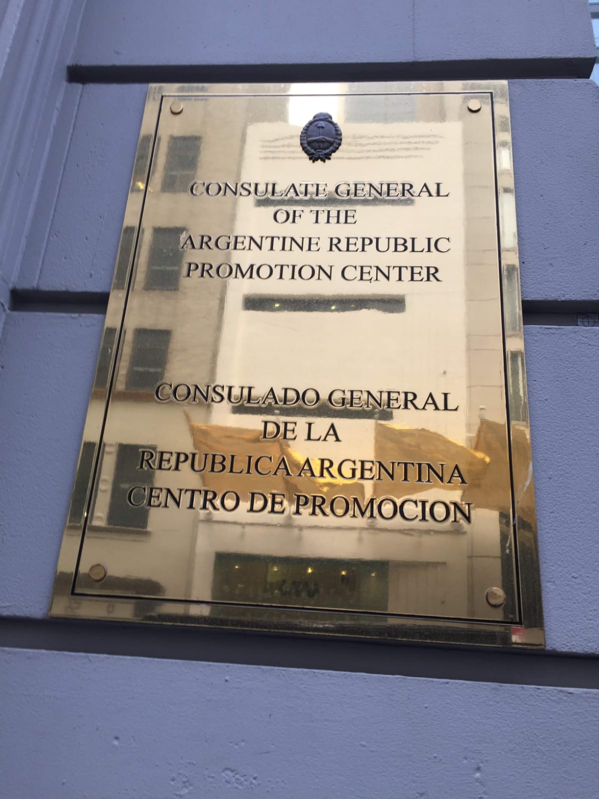

actualidad
¿cual es el contexto del mundo de hoy?
Perspectivas del Mundo Actual
Fuente: Ámbito Financiero
Cómo Entendemos la Perspectiva
Las tendencias, eventos y cambios que están moldeando el contexto global, desde avances tecnológicos hasta dinámicas sociales y económicas, presentan un panorama que es esencial conocer para entender el presente.
 Foto: https://www.unf.edu.ar/lanzaron-concursos-del-programa-universidad-y-trabajo-argentino-en-el-mundo/En un mundo interconectado, el desafío no es solo acceder a las oportunidades, sino distribuirlas equitativamente. A través de un enfoque federalista, es posible llevar esas oportunidades a todas las regiones, reconociendo y potenciando las fortalezas y actividades locales. Las regiones tienen un enorme potencial latente de crecimiento, y es nuestro objetivo desbloquear esas posibilidades donde están esperando ser aprovechadas.
Foto: https://www.unf.edu.ar/lanzaron-concursos-del-programa-universidad-y-trabajo-argentino-en-el-mundo/En un mundo interconectado, el desafío no es solo acceder a las oportunidades, sino distribuirlas equitativamente. A través de un enfoque federalista, es posible llevar esas oportunidades a todas las regiones, reconociendo y potenciando las fortalezas y actividades locales. Las regiones tienen un enorme potencial latente de crecimiento, y es nuestro objetivo desbloquear esas posibilidades donde están esperando ser aprovechadas.
El desarrollo de alianzas estratégicas, el diseño de programas innovadores y la creación de vínculos sólidos son claves para destrabar el potencial de cada región. Al buscar oportunidades y fomentar la colaboración, podemos construir una red de aliados que impulse el crecimiento económico, la expansión del bienestar y una mayor calidad de vida para todos.
Al fomentar actividades que generen sinergias entre los sectores productivos, sociales y culturales, se crean las condiciones ideales para potenciar el desarrollo de matrices productivas. Esto no solo lleva al crecimiento económico, sino que también tiene un impacto directo en áreas clave como la educación, la salud, la infraestructura y la cultura. Invertir en programas educativos, promover la innovación tecnológica, apoyar el arte y la cultura, y asegurar una obra pública de calidad son pasos esenciales para garantizar un futuro próspero para todas las regiones.
El crecimiento económico no es solo un indicador de éxito, sino un medio para mejorar la calidad de vida de las personas. Es a través de estas iniciativas que se generan las bases para una sociedad más justa, más equitativa y más próspera.
El Mundo Hoy
Integrarse en un Mundo Conectado: El Poder de las Becas, Relaciones, Diálogos y Certificaciones.
La integración no es solo una opción, sino una necesidad para el desarrollo y el progreso. Las oportunidades están cada vez más interconectadas, y acceder a ellas requiere de un enfoque que favorezca la colaboración y el intercambio. En este contexto, las becas, las relaciones, los diálogos y las certificaciones se presentan como herramientas fundamentales para potenciar el acceso a nuevas posibilidades y lograr el desarrollo integral.
Las Becas ofrecen acceso a conocimientos, formación y experiencias que de otro modo serían inalcanzables para muchos. Son puertas abiertas que permiten que personas de diversas regiones se capaciten en áreas clave, generando una circulación de ideas y habilidades que enriquecen tanto a los individuos como a sus comunidades. Gracias a ellas, se pueden generar nuevos líderes en ciencia, tecnología, arte, y otros sectores vitales para el progreso.
Las Relaciones y los Diálogos son esenciales para crear redes de colaboración que permiten un intercambio constante de ideas, recursos y oportunidades. Estas interacciones no solo abren puertas, sino que también fomentan una cultura de cooperación y entendimiento mutuo. En un mundo interconectado, las relaciones estratégicas entre actores de diferentes sectores y regiones se convierten en un motor de crecimiento, desarrollo y estabilidad. El diálogo constante facilita la resolución de problemas comunes, la identificación de oportunidades compartidas y el diseño de soluciones colectivas que beneficien a todos.
Por último, las Certificaciones son un reconocimiento formal que avala las competencias y habilidades adquiridas, brindando credibilidad y acceso a nuevos horizontes. Son una forma de validación que abre puertas tanto en el ámbito profesional como académico, permitiendo que las personas puedan demostrar su preparación en un mercado cada vez más competitivo y globalizado.
En conjunto, las becas, las relaciones, los diálogos y las certificaciones son piezas clave en el proceso de integración a un mundo conectado, ofreciendo las herramientas necesarias para acceder a nuevas oportunidades, fortalecer capacidades y crear un impacto positivo en diversas comunidades.